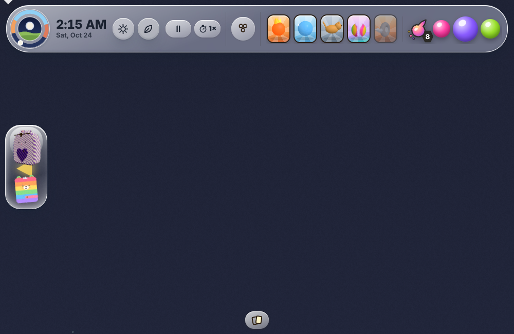
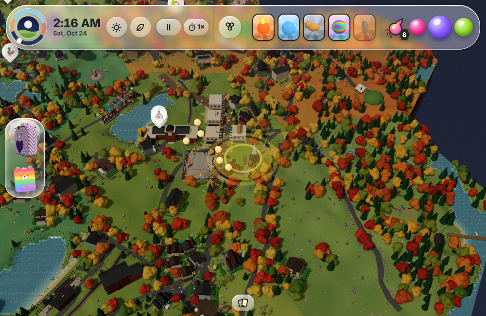

1. She says yes to a favour: the next place gets a spotlight. If it is off screen, a glowing arrow on the screen edge points to it.

2. She takes the object out of her backpack: the favour is said again (words on screen, voice) and the camera flies toward the place.

Close-up of the object waits on the backpack redesign.